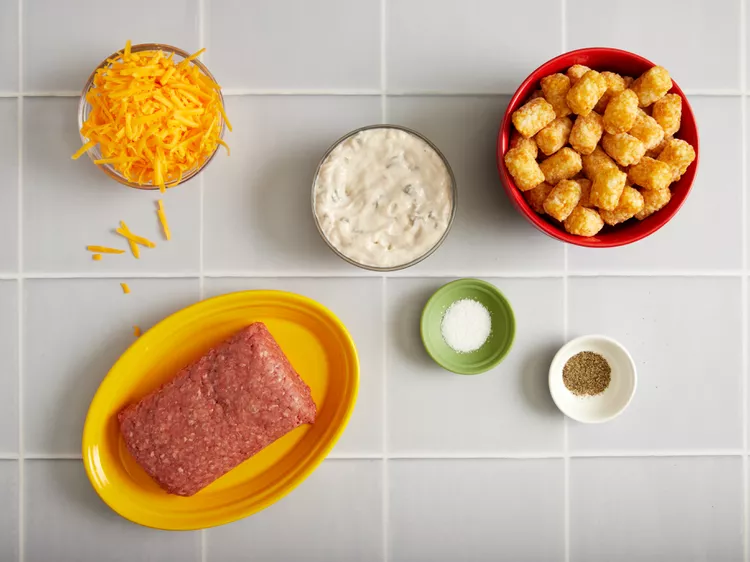
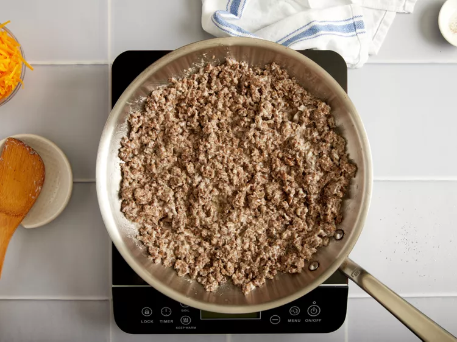
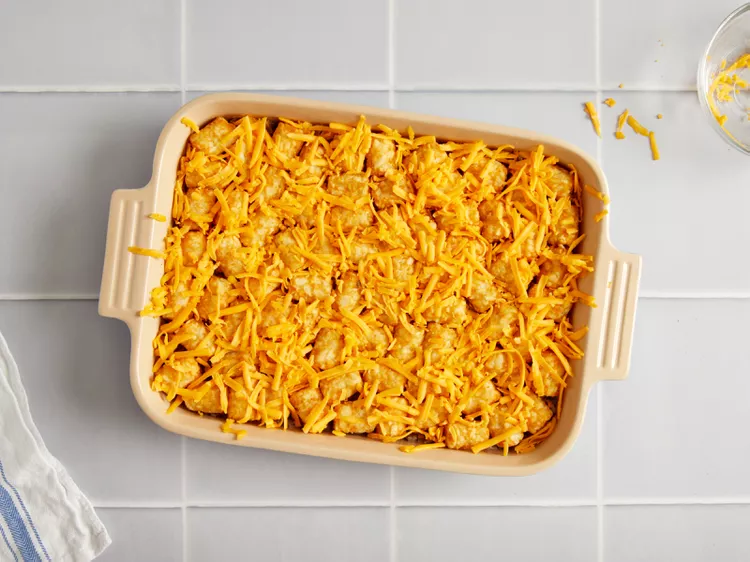
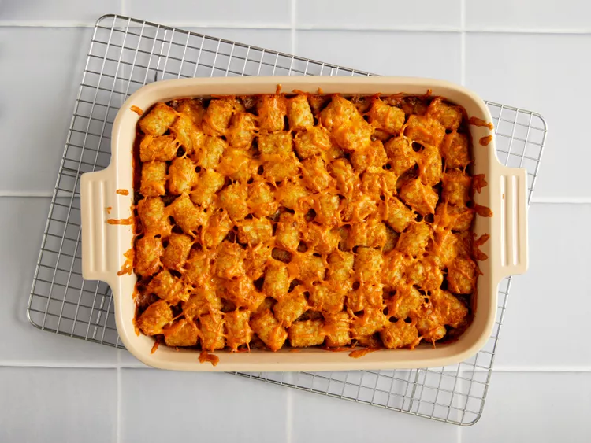

Tater Tot Casserole
Prep Time: 5 mins
Cook Time: 40 mins
Total Time: 45 mins
This Tater Tot casserole is a quick and easy dinner that everyone will love. Just four basic ingredients come together for this comforting dish.
Ingredients
- 1 pound ground beef
- 1 (10.5 ounce) can condensed cream of mushroom soup
- salt and ground black pepper to taste
- 1 (16 ounce) package frozen tater tots
- 2 cups shredded Cheddar cheese
Directions
Step 1:
Gather the ingredients. Preheat the oven to 350 degrees F (175 degrees C).
Step 2:
Heat a large skillet over medium-high heat. Cook and stir ground beef in the hot skillet until completely browned and crumbly, 7 to 10 minutes. Stir in condensed soup; season with salt and black pepper.
Step 3:
Transfer beef mixture to a 9x13-inch baking dish; layer tater tots evenly on top and sprinkle with Cheddar cheese.
Step 4:
Bake in the preheated oven until tater tots are golden brown and hot, 30 to 45 minutes.
Step 5:
Serve and enjoy!

Nutrition Facts (per serving)
345
24g
17g
19g
Calories
Fat
Carbs
Protein